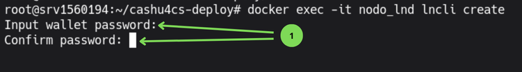
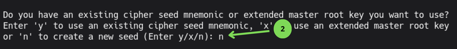
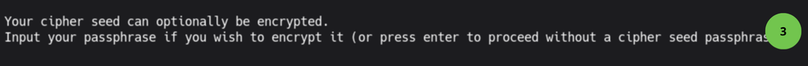
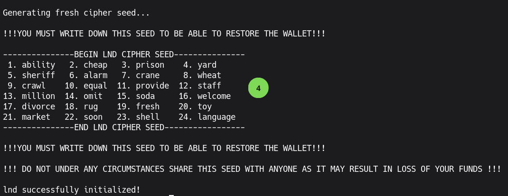
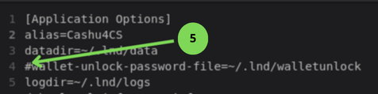
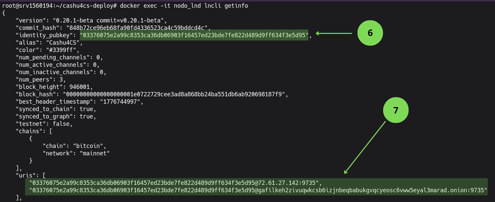

Inicializando Lightning Network Daemon (LND)
En la guía de primeros pasos creamos y configuramos la contraseña necesaria para desbloquear la billetera del servicio LND, la cual se guardó en el archivo walletunlock. Ahora vamos a crear la billetera.
2.1 Creando la billetera
Ejecutamos lo siguiente:
cat app-data/lnd/walletunlockEsto devuelve la contraseña creada con anterior
+6Mn31qVwLC-La copiamos y ejecutamos:
docker exec -it node_lnd lncli createEsto nos lleva al asistente de creación de la billetera
Imagen 1: Clave de cifrado de la billetera.

- Introducimos la clave del archivo
walletunlockdos veces.
Imagen 2: Crear una billetera nueva.

- Introducimos
npara crear una billetera nueva.
Imagen 3: Crear una passphrase para la billetera

- Presionamos
Enterpara obviar la passphrase.
Imagen 4: Frase semilla de la billetera LND

- Copie la frase semilla en un lugar seguro y alejado de internet.
Ahora vamos a editar el archivo lnd.conf y buscar la línea wallet-unlock-file
nano app-data/lnd/lnd.confImagen 5: Archivo lnd.conf parámetro wallet-unlock-file

- Quitamos el símbolo # de delante de la línea
wallet-unlock-file
Salvamos y salimos del archivo ctrl+s y ctrl+x
2.2 Adquisición de Liquidez (Canales de Entrada)
Para recibir pagos en su Mint o LNbits, su nodo necesita liquidez de entrada (Inbound Liquidity). Al ser un nodo nuevo, no tiene canales abiertos, por lo que debe "alquilar" o comprar liquidez inicial a través de mercados especializados.
2.2.1 Servicios de liquidez recomendados
- LNBig: Permite solicitar la apertura de canales directos hacia su nodo. Ideal para liquidez rápida y de alta capacidad.
- Amboss Magma: Mercado donde puede comprar canales de liquidez de entrada. Permite filtrar por reputación, duración y costo.
- Zeus LSP: Proveedor de liquidez integrado con la wallet Zeus, permite abrir canales de forma sencilla.
- LN Server: Servicio de apertura de canales Lightning con distintas opciones de capacidad.
Para utilizar estos servicios, se necesitará el URI del nodo, que tiene el formato:
pubkey@ip:9735 o pubkey@direccion.onion:9735
2.2.2 Obteniendo la dirección URI del nodo LND
Ejecutamos:
docker exec -it node_lnd lncli getinfoImagen 6: Resultado del comando lncli getinfo.

- Clave Pública del nodo LND.
- Dirección URI del nodo tanto en la red Clearnet como Tor, cualquiera de las dos es valida para los proveedores de liquidez.